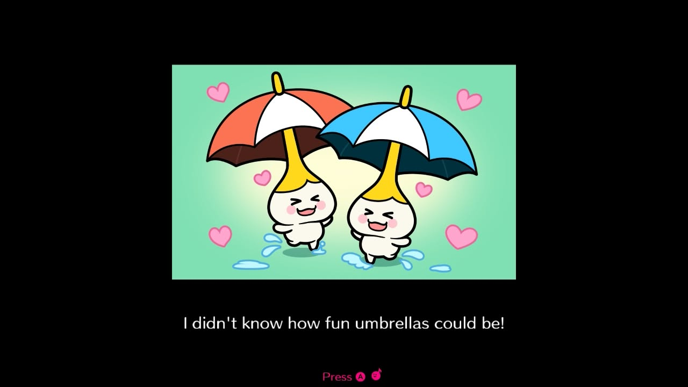
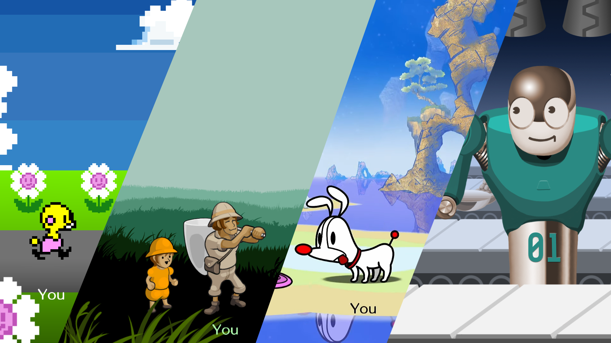

Rhythm Heaven - a Series Losing It's Groove

Or, as we say in Europe: how a Paradise got lost along the way
19/08/2026
Rhythm Heaven Groove is a strange game. Not strange as in weird, but strange as in... misaligned. In a series of perfectly even, cohesive monoliths: Groove is Leaning Tower of Pisa-esque. It feels like the priorities for this game were put in completely different places than it's predecessor; whilst simultaneously clinging to the relevancy of said predecessor. It's a lopsided experience, one that is objectively good and still ultimately disappointing? At least to me.
Granted, I am perhaps too close to the subject matter. Rhythm Heaven is one of my favourite game series of all time - such a tour-de-force of creativity, charm, cohesion, catchy tunes and covert education - it's got it all! Both the entry on Wii and DS are two of my 10/10 games, of which I am quite stingy with handing out. Groove is a 7/10. It is nothing to write home about, in a series that I literally write home about. (Although, I guess I am writing about it now, so who's the real chump?)
POLYRHYTHM HEAVEN
Rhythm Heaven is a series of musical minigames all about the player feeling the flow. It's a series that could easily feel so eclectic - some of the previous games having up to 50 rhythm games, each with different songs and musical styles - but it never feels disarrayed, and I think that's because of ridiculously strong penmanship. The games are a collaboration between Tsunku, Japanese music producer, and Nintendo; but specifically the quirky, absurd side of Nintendo that knows how to have fun at parties. Y'know, the side that made Tomodachi Life and, most notably WarioWare.
WarioWare is firmly Rhythm Heaven's sister series: obviously both are minigame collections, but they also share a lead artist: Ko Takeuchi. His style is all over the WarioWare series, particularly the character and world designs, but there the microgames have a much wilder palette of styles. You see microgames in beautiful watercolour, low-poly 3D, visual homages to retro games, and way more. That vibe fits for the ultra-fast pace of WarioWare, but Rhythm Heaven pulls the wildness back and keeps an incredibly consistent stylistic throughline, and it brings everything together.
Rhythm Heaven is an aesthetic powerhouse - one glance at a screenshot and you can instantly recognise that Rhythm Heaven look. And the series plays this to it's advantage, purposefully mashing up the games into Remixes and never messing with the flow. That element is perpendicular to WarioWare - one is defined by randomness, one is defined by variety. There's a huge difference!
OVERFEEDING THE BEAST
The alarm bells really should have been ringing when Groove was announced to have 80 games in it. This is, frankly, an obscene number. When did you last listen to an album with 80 good songs on it? I figured it was possible, considering the series track record and the fact it had been 15 years since the last fully original entry, but it’s safe to say I was skeptical.
Honestly, that one fact is what would become my main complaint with the game: it’s bloated! It could do with a good few edits and cuts, and it’s hard to really see that deft hand that felt so distinctive about the DS and Wii entries. There’s 80 games here, but it’s significantly out of balance due to giving every game a sequel - many of which feel like the “real” version of the song.
This will delve a bit into music criticism, which isn’t really anything I’m qualified to talk about, but a lot of the songs in Groove just sound quite… generic. Songs like Crab Snacks 1 have a strong “GarageBand loop” feeling, especially when compared to it’s sequel game, which is also mechanically so much more interesting - ultimately giving me the impression that these “prequels” were built to fill a quota.
The same is true for the Remixes, which feel especially haphazard. There’s 20 of them here, but there’s such an inconsistency with them - some have visual themes, some don’t. Some have fleshed out songs and distinct gameplay gimmicks, some barely scratch a minute long.
Around the halfway point in the game, there’s a specific moment where the quality drastically increases, as if the best games and moments were being saved for the second half. But if half of the game doesn’t even feel like Rhythm Heaven, then I’m going to look down a lot more on the experience, even if the overall total of games is higher. I’d much rather a ridiculously consistent set of 50 games, than a set of 80 that is all over the place.
FALLING OUT OF LOCKSTEP
As well as the song quality varying hugely, the visual style also constantly ebbs and flows. Ko Takeuchi's is loud and clear in games like Brolly Good Show and Backup Spotlight, but there's a big variety of games that don't follow that template at all. Hop N Slide goes for pixel art, Yum-Bot ditches the outlines, Flutter Speed has very prominent pillow shading, Spirit Slasher goes for almost a watercolouor vibe, A For Effort is all stock images - there just isn't a lot of cohesion. Whilst it's obviously an intentional choice, it doesn't really stick the landing because the game doesn't present this style choice with a lot of confidence.

Maybe I'm just nitpicking, but do these really feel like the same game?
Do you know what I mean if I say that the games in Groove feel like coworkers? When you see them together in a Remix, there isn't any group cohesion - I couldn't see the Trundlorbs from Hoop Trundling in the same world as the father and daughter from Flutter Speed. They exist in entirely different universes. But the game doesn't feel defined by those differing universes, there's no Spiderverse-esque distinction and intention to everything. To put it in musical terms, each different part of Groove feels like it's playing in a different key. Some notes overlap, but some notes stick out like a sore thumb.
When I play Remix 10 from Fever, each song flows so perfectly into the next, with the visuals fitting together to form a tableaux of quirkiness. There's clear consistent penmanship and the voice of the author rings loud and clear. Those levels are not coworkers, they are friends.
When I play Remix 20 from Groove, there just isn't that same coherence to the stitching. Some of the transitions crash into you with the grace of a hammer, like Soda Hop to Wiper Bosses, or Quick Hands to Yum-Bot. Those games aren't friends, those games were once in the same building. The game just doesn't Flow, and considering that's a huge part of the series branding... it's just a letdown.
THE UNIVERSAL ALIEN ALPHABET
However, there are two huge artistic statements that make it impossible for me to hate Groove - the most prominent and advertised of these being the full blind accessibility and language free translation. Every line of dialogue in the game can be read out by text to speech, a feature I thought confusing at first given how they could have hired a voice actor… but it made a lot more sense once I put it together with the international flair of the game. Using TTS allows the game to be translated to every language, rather than just an English and Japanese translation.
Rather than just tossing a coin in the accessibility jar and calling it a day, Groove really commits to this international flair. The game includes songs in 5 different languages, all untranslated. The game has a clear international flair: levels are set on Parisian streets and Spanish beaches, it feels like a celebration of world culture and the fact that music is a global language anyone can speak and hear, even the blind. I think the statement the game makes here is beautiful, and I think leaning into this would have given it even more identity! I would love a more purposeful “Rhythm Heaven: World Tour”, give me songs in Korean, Portuguese, make it a huge worldwide collaboration! It toes the line of this international identity - but the game would be a whole lot more memorable if it really delved in. Backup Spotlight, Brolly Good Show 2, Crab Snacks 2 and Soda Hop 2 all feature songs in different languages, and it’s no coincidence that those are probably my top 4 games here.
The other statement that I really resonate with in Groove is the focus on Multiplayer! The selection of cooperative and competitive games are some of the biggest highlights: each feeling much more in line with the music quality I expect from this franchise. My friend who adores Rhythm Heaven played these with me, and her take of “Oh, this is the bit that Tsunku worked on” feels instantly true. These genuinely stretch the abilities of the players, and are probably the biggest challenge in the series. Games like Pet N Parcel feel like a love letter to Rhythm Heaven as a series, and the whole thing is exactly what I’ve wanted from a rhythm game - multiplayer content that is bespoke and not an afterthought.
Extra shout out to Cake Wait - a ridiculously simple but effective party game about waiting until the perfect time to snatch a slice of cake. It’s not reaaaaally any more complicated than a Mario Party minigame, but it’s so visually fun and brings that Rhythm Heaven energy to a party setting.
To me, these design ideologies feel so in line with the series as a whole. I've always seen Rhythm Heaven as a half-game, half-music theory teaching tool. The developers don't just want you to feel the rhythm, they want you to understand it - the original game came packaged with a set of Drum Lessons (a feature that Groove brings back!), and bounces between teaching you polyrhythms through Polyrhythm, scales through Built to Scale, and Bossa Nova beats through Bossa Nova (when you type that out, it sounds pretty obvious!) Bringing the flow of music to the masses was always the main philosophy behind Rhythm Heaven, and this is certainly the game with the most mass appeal and accessibility... so I can't really be too mad about that.
BIG ROCK FINISH
Even just writing this felt a little bad, because... well, the game is still good! It's still a labour of love, even if the penmanship isn't as distinct as before. The story of Rhythm Heaven in a post-Megamix world is a lot more complicated than this article may make it seem, and I'm over the Sneezy Moon that we got another game in the first place.
During the development of Megamix on 3DS, Tsunku contracted laryngeal cancer, which he thankfully survived but which sadly cost him his vocal chords. If I look at the game more as a personal expression of his feelings post that experience - wanting to collaborate with different artists more, wanting the experience to be available to everyone, and continuing to embrace the playful joy of music - Rhythm Heaven Groove is beautiful. I see so many fascinating and gorgeous facets to this game, I just wish that it refined those elements to a point.
Whilst this article may have been decently negative, I am really hopeful for Rhythm Heaven. Getting a new game after Megamix at all is a miracle and a half, and there's so many glimmers shining through here! This game feels almost like a fresh start for the series, not because it needed it, but because the world it once existed in is gone. What does Rhythm Heaven look like in the era of the Switch? Here's hoping that it finds the Flow again.